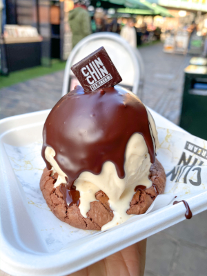

Hi, I'm Alessandra!
Welcome to my blog! I'm Alessandra and I'm a college student from Philadelphia. I'm passionate about food, travel and wellness, which I share here. I hope you enjoy this small portion of me and look out for more exciting things to come and you can find me on Instagram!

I’ve posted my picks for London sweets and brunches, but I haven’t talked about my love for London cafés! I explored many London cafés during my time in London …

While studying abroad in London, I was obsessed with the abundance of street food and markets that are in and around London ...
During my time studying abroad in London I made it a priority to seek out all of the best dessert spots in London ...

I visited the romantic city of Paris during Valentine's Day weekend in 2020 while studying abroad in London ...

If you’ve read any of my other blog posts, you know I go crazy over brunch! When on vacations and weekends it is my favorite …

Barcelona was simply a dream. Up until visiting, I had not fallen so fast and hard in love with a place ...

Can I just start by saying that Amsterdam is one of the most interesting places I’ve ever been?! The city is the capital of the Netherlands and has many unique attributes …